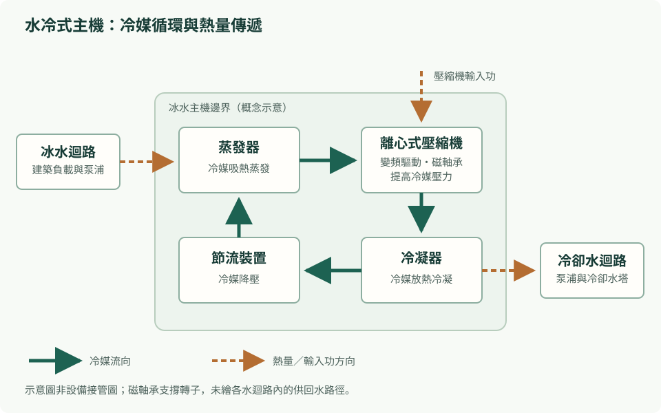

前言
選購冰水主機時，常見的問題是：「某台磁懸浮無油主機的 IPLV 比較好，是不是裝上去就一定比較省電？」
答案不能只看一個數字。冰水主機的實際耗電會隨冷房負載、冰水溫度、冷卻水溫度及控制方式變化；如果冷卻水塔、泵浦和主機之間沒有協調好，即使主機在標準條件下表現優異，也不代表整座冰水系統的年度費用最低。[1][2]
另一個重要問題是喘振。離心式壓縮機在低流量、高壓力需求等不利條件下，可能進入不穩定運轉區域。變頻與磁懸浮各自解決不同問題，並不能單憑設備名稱推論「不會喘振」。[1]
本文以水冷式、磁懸浮無油變頻離心式冰水主機及其冷卻水系統為主要討論範圍，從基本原理說明 IPLV 的用途、喘振形成條件、系統控制，以及如何用假設案例比較全生命週期成本。實際設備能力、控制邊界及維護要求仍須以原廠文件與專案條件為準。
一、先認識設備：磁懸浮、無油、變頻與離心式各代表什麼？
這四個名詞分別描述不同技術面向，不宜視為同義詞。
| 名稱 | 描述的技術 | 主要作用 | 不代表什麼 |
|---|---|---|---|
| 離心式 | 壓縮機的壓縮方式 | 葉輪對冷媒做功，配合擴散器提高壓力 | 在所有流量與壓力條件下都能穩定運轉 |
| 變頻 | 馬達轉速控制方式 | 隨需求調整壓縮機轉速與能力 | 所有負載下都比其他方案省電 |
| 磁懸浮 | 轉子支撐方式 | 以磁力控制轉子位置，正常懸浮運轉時減少軸承接觸 | 沒有控制系統、備用支撐或維修需求 |
| 無油 | 設備特定潤滑與冷媒迴路設計 | 避免傳統潤滑油在指定冷媒迴路中循環 | 所有零組件皆不需維護，或所有故障都可避免 |
磁懸浮的基本概念是利用磁力支撐轉子，並藉由位置感測與控制維持轉子位置。實際磁軸承配置、停電時的轉子支撐、保護電源及故障處置方式，依壓縮機設計不同；採購時應向製造商確認，不能只憑「磁懸浮」三個字推定。
無油的具體定義也要看設備文件。對使用者而言，應確認供應商所說的「無油」涵蓋哪些部位、冷媒迴路及正常操作條件，並確認保養項目與備品要求。
1. 冰水主機與外部系統的邊界
水冷式冰水主機通常與兩個外部水迴路相連：
- 冰水迴路：冰水泵使水流經蒸發器及空調負載，將建築物熱量送回主機。
- 冷卻水迴路：冷卻水泵使水流經冷凝器及冷卻水塔，將冷凝器熱量排至環境。
主機、冰水泵、冷卻水泵與水塔風扇的電力應分別量測。主機效率不等於整座冰水系統效率：若為了改善主機效率而增加水塔風扇或泵浦耗電，必須把增加的用電一起計算。[1][2]
2. 冷媒如何完成循環？
在簡化的蒸氣壓縮式冷凍循環中：
- 蒸發器：冷媒從冰水吸熱並蒸發，產生冷卻效果。
- 離心式壓縮機：葉輪對冷媒做功，提高冷媒壓力。
- 冷凝器：較高壓力的冷媒向冷卻水放熱並冷凝。
- 節流裝置：液態冷媒降壓後回到蒸發器，繼續循環。

冷凝器排出的熱量不只有冰水帶來的熱，還包括壓縮機等進入冷媒系統的能量。因此，冷凝器負載與冷卻水塔負載不能直接視為與蒸發器冷量完全相同。[1]
二、離心式壓縮機、溫度提升與喘振
1. 什麼是溫度提升（lift）？
離心式冰水主機需要讓冷媒從蒸發器的較低壓力，提升到冷凝器所需的較高壓力。
工程上常用冷凝與蒸發條件之間的差距，理解壓縮機必須克服的「提升」程度。可用冷媒飽和溫度差作為直觀比較：
其中 Tcond,sat 為依冷凝壓力換算的冷媒飽和溫度（°C）；Tevap,sat 為依蒸發壓力換算的冷媒飽和溫度（°C）；ΔTlift 為兩者溫差（K）。
這是有助理解的溫差指標，不是所有壓縮機性能都可由單一溫差決定的完整公式。冷媒性質、實際流量、換熱器溫差、壓力損失及壓縮機效率仍會影響結果。
一般來說，在其他條件相近時，較低的冷凝溫度或較高的蒸發溫度，可能降低壓縮機所需克服的提升；但不能忽略設備的供液要求、最小冷卻水溫度及其他操作限制。[1]
2. 變頻如何影響離心式壓縮機？
變頻器調整馬達與葉輪轉速，使壓縮機能力能隨系統需求變化。ASHRAE 說明，變速可配合導葉控制，讓壓縮機在較廣的負載範圍內尋找合適的運轉狀態；效果仍受實際冷凝條件與設備設計影響。[1]
轉速降低時，壓縮機提供流量與提升的能力也會改變。若冷凝側要求的壓力提升仍很高，單純降低轉速不一定足以穩定運轉。
3. 喘振是什麼？
喘振（surge）是壓縮機系統在特定條件下出現的整體流動不穩定。簡化來說，當壓縮機在當前流量及轉速下，無法持續提供系統所需的壓力提升時，流量與壓力可能出現週期性波動，嚴重時可能伴隨短暫逆流、振動或保護停機。[1]
不應把喘振簡化成「只要低負載就一定發生」。真正要看的是多個因素的組合，例如：
- 冷媒流量；
- 壓縮機轉速及導葉位置；
- 冷凝與蒸發壓力；
- 換熱器水側流量與汙垢；
- 冷卻水塔能力；
- 原廠定義的穩定運轉範圍。
ASHRAE 列舉可能提高所需提升或冷凝壓力的原因，包括冷凝器或蒸發器水側汙垢、冷卻水塔性能不足、冷凝器內不凝結氣體，以及冷凝器流量低於設計條件。[1]
4. 喘振與局部失速不是完全相同的現象
壓縮機內局部流動可能先產生不穩定，但「局部失速」與整個壓縮系統的「喘振」不應在沒有進一步資料時完全等同。現場聽到噪音、觀察到電流波動或冷量不穩，也不能只憑單一現象就判定一定是喘振；應結合原廠控制器事件紀錄及操作資料分析。
不要為了驗證喘振而刻意讓主機進入不穩定區。若有疑慮，應由原廠或合格維護人員依設備保護程序確認。
三、IPLV 是什麼？它能回答什麼，不能回答什麼？
1. 從滿載效率到部分負載表現
冰水主機不一定全年都在設計滿載運轉。為了比較設備在部分負載下的表現，產業會使用綜合部分負載值（integrated part-load value，IPLV）。
IPLV 的目的，是在指定的標準化測試或計算條件下，將數個負載點的性能整理成一個比較指標。它對於同一標準、同一版本及相同設備分類下比較主機有參考價值。但它不是某棟建築實際全年耗電的直接量測值。
2. 為什麼 IPLV 不能直接等於年度效率？
標準化指標的條件，可能與專案的實際運轉分布不同：
| 比較面向 | 標準化部分負載指標 | 實際場址 |
|---|---|---|
| 負載分布 | 依指定方法選取或加權 | 受建築使用、季節、生產排程影響 |
| 冷卻水溫度 | 依標準條件 | 受濕球溫度、水塔能力與控制影響 |
| 冰水溫度 | 依指定條件 | 可能固定或依需求重設 |
| 主機台數 | 依設備評定方式 | 可能多台輪替、並聯及備援 |
| 輔助設備 | 依評定邊界 | 水泵、水塔風扇、控制設備皆可能耗電 |
| 啟停與故障 | 未必能反映特定場址全部事件 | 受控制策略、最低負載與維護狀態影響 |
所以，IPLV 好的主機可能在某個場址節能，但不能只憑 IPLV 就保證該場址年電費最低。
3. 容易混淆的幾個觀念
迷思一：IPLV 越低，任何情況都越省電
如果指標單位是 kW/RT，在相同定義下通常是數值越低代表每冷凍噸所需功率越低；但如果使用 COP，則相反，是越高越好。比較前必須先核對單位、定義及條件。
迷思二：把各負載點的 kW/RT 直接算術平均，就是年度 kW/RT
不一定。要計算實際期間的平均單位冷量耗電，應以總電能除以總冷量：
其中 eannual 為統計期間平均單位冷量耗電（kWh/RTh，可數值對應 kW/RT）；Echiller 為同期間主機電能（kWh）；Qannual 為同期間供應的冷量，冷凍噸時（RTh）。若各時段冷量不同，不能單純將每個時段的 kW/RT 用運轉小時作一般算術平均，而不考慮各時段提供多少冷量。
迷思三：磁懸浮無油就不需要維護
無油設計可能改變傳統油路相關維護內容，但壓縮機、磁軸承控制、變頻器、感測器、換熱器、冷媒、電力及保護系統仍需依原廠要求檢查。水側結垢也不會因為壓縮機無油而自動消失。[1]
迷思四：主機功率最低時，整座冰水站也一定最低
冷卻水溫度降低，可能有助於降低壓縮機功率；但水塔風扇可能因此增加耗電。正確做法是比較：
各項皆為同時刻電功率，單位 kW。此式是所選設備邊界內的功率加總；實際評估還須註明哪些設備納入或排除。
4. 關於 IPLV 權重與標準版本
常見資料會列出不同負載點及加權方式，但其適用條件、單位形式、設備分類及版本都需要核實。
本次未取得並核對相關 AHRI 標準全文與最新修訂狀態，因此不在本文列出特定版本的 IPLV 加權係數，也不將本文案例稱作標準 IPLV 計算。採購或認證比較時，應要求供應商提供所依據的標準版本、設備分類、評定條件及性能資料。
AHRI 官方表示，其產品性能認證計畫是自願性計畫，用於確認受涵蓋產品符合製造商公布的性能聲明；是否認證及其涵蓋範圍，仍應查核特定型號。[3]
四、如何降低喘振風險？
1. 從源頭降低不必要的壓力提升
在符合原廠限制下，應檢查造成冷凝壓力升高或蒸發壓力降低的原因。[1]
| 檢查項目 | 對運轉的可能影響 | 工程處置方向 |
|---|---|---|
| 冷卻水進水溫度偏高 | 冷凝溫度與所需提升可能增加 | 檢查室外條件、水塔能力、風扇及水量 |
| 冷凝器水側結垢 | 傳熱變差，可能需要較高冷凝溫度排熱 | 比較端差與歷史趨勢，依程序檢查及清洗 |
| 冷凝器流量不足 | 換熱條件改變，可能增加冷凝壓力 | 確認流量、過濾器、閥位及泵浦狀態 |
| 蒸發器水側問題 | 可能改變蒸發溫度及壓力 | 檢查冰水流量、水質、端差與負載 |
| 不凝結氣體 | 可能提高冷凝壓力 | 依冷媒型式及原廠程序檢查 |
| 冷媒流量或負載過低 | 操作點可能接近穩定邊界 | 檢查最低負載、主機組合及控制紀錄 |
上表是排查方向，不是各項異常的唯一原因。採取處置前，應先確認感測器、流量量測及操作紀錄是否可信。
2. 利用原廠性能曲線與控制保護
有效的防喘振設計，需要供應商提供：
- 不同轉速、負載及冷凝條件下的可操作範圍；
- 最低穩定負載或最低穩定流量的定義；
- 導葉、變頻與其他卸載裝置的控制方式；
- 冷卻水及冰水的允許溫度與流量；
- 喘振偵測、警報、限載及保護動作；
- 多壓縮機或多主機運轉時的控制限制。
實際穩定邊界是設備及工況相關的結果，本文不提供通用的「最低負載百分比」。
3. 水塔控制不能只追求最低出水溫度
ASHRAE 指出，在符合製造商建議最低冷卻水溫度的前提下，降低冷卻水溫度有助於降低主機功率；其所述水塔應用亦提醒，不能以任意降低冷凝器水流量取代適當的溫度控制。[1]
實際最佳設定值應同時考慮：
- 主機冷凝壓力與穩定運轉；
- 原廠最低冷卻水溫度及流量；
- 水塔風扇與冷卻水泵功率；
- 室外濕球溫度與水塔能力；
- 水質、結垢與控制穩定性。
例如，較低冷卻水溫使主機省下 10 kW，但水塔風扇多用 15 kW，在其他設備不變時，整體反而增加 5 kW。這只是說明計算邏輯的假設，不是特定設備的實測結果。
4. 多台主機與最低負載
若最低負載時間長，工程方案可能包括調整主機台數、適當分配負載、使用較小容量設備或依原廠設計採其他卸載方式。
熱氣旁通可能使系統在較低外部負載下維持運轉，但不代表主機功率會隨有效冷量等比例降低。ASHRAE 對熱氣旁通的說明指出，旁通啟用後，功率可能維持在接近啟用前的水準。[1] 因此，應同時評估穩定性與能耗，而不是只看「能否繼續運轉」。
五、如何估算實際年度用電？
1. 以負載時段建立計算表
若已取得主機在各代表性工況的性能資料，可先用分時段方法估算：
其中 Echiller 為估算期間主機電能（kWh）；Qi 為第 i 個時段的冷量（RT）；ei 為該時段主機單位冷量功率（kW/RT）；hi 為該時段運轉時間（h）。因為 Qi × ei 的單位為 kW，再乘以小時得到 kWh。
適用條件：每個時段的 ei 必須對應同一時段的冷量、冰水條件、冷卻水條件及主機運轉組合。若負載與氣象變化大，僅用少數時段可能不夠，應改用更細的逐時資料或經校正的模擬。
2. 年度冷量與主機平均效率
同期間的總冷量為：
其中 Qannual 的單位是 RTh。再以主機總用電除以總冷量，可得到該假設期間的主機平均 kWh/RTh。
若要評估全系統，還應另外加上冰水泵、冷卻水泵、水塔風扇及所選邊界內其他設備的電能。不能把主機的標準性能數據與整站電表結果混為同一個指標。
六、假設案例：比較主機耗電與全生命週期成本
1. 已知條件
假設比較 A、B 兩套各具 1,000 RT 額定冷量的方案。為了只說明計算方法，先假設已確認兩方案的供冷能力、備援與安全條件均符合需求。
| 代表工況 | 冷量 Qi | 時數 hi | A 主機功率指標 | B 主機功率指標 |
|---|---|---|---|---|
| 高負載 | 900 RT | 500 h | 0.66 kW/RT | 0.62 kW/RT |
| 中負載 | 600 RT | 1,500 h | 0.50 kW/RT | 0.54 kW/RT |
| 低負載 | 300 RT | 1,000 h | 0.52 kW/RT | 0.64 kW/RT |
上述功率指標假設已分別對應各工況的冰水與冷卻水條件。總運轉時間為 3,000 h；停機時能源暫不計入。
2. 計算主機年度電能
方案 A：
= 297,000 + 450,000 + 156,000 = 903,000 kWh
方案 B：
= 279,000 + 486,000 + 192,000 = 957,000 kWh
在這組假設下，A 主機比 B 主機少用 957,000 − 903,000 = 54,000 kWh。
雖然 B 在表列高負載點較省電，但 A 在中、低負載的優勢，加上假設的時數分布，使 A 的主機年度估算用電較低。換一組負載或冷卻水條件，結果可能不同。
3. 計算同期間的平均主機效率
兩方案供應的總冷量相同：
因此：
eB = 957,000 ÷ 1,650,000 = 0.580 kWh/RTh
這是本假設期間的平均主機指標，不是 IPLV。
4. 加入輔助設備後，差距可能改變
假設方案 A 為維持其所列工況，冷卻水塔及泵浦合計平均比 B 多用 12 kW，持續 3,000 h：
則 A 相對 B 的全系統電能節省為 54,000 − 36,000 = 18,000 kWh。
若假設兩方案其他設備用電相同，且平均電能費率均為 NT$3.5/kWh：
此費率僅為教學假設，不代表台灣現行電價或任何用戶契約。案例也未納入契約容量、需量電費、尖離峰差異及停機待機用電。
5. 全生命週期成本：多付的初期費用是否值得？
全生命週期成本（life-cycle cost，LCC）比較的重點，是將不同時間發生的投資、能源、維護、更換及期末價值，換算到相同的比較基準。NIST 的建築生命週期成本工具即用於比較初期投資與後續操作成本不同的方案。[4]
本例只比較 A 相對 B 的增量成本與增量效益，假設：
| 項目 | 假設 |
|---|---|
| A 比 B 多出的初期投資 | NT$800,000 |
| A 每年電費節省 | NT$63,000 |
| A 每年維護費用淨節省 | NT$20,000 |
| 每年總淨節省 | NT$83,000 |
| 分析期間 | 10 年 |
| 實質折現率 | 每年 6% |
| 第 10 年 A 相對 B 的額外殘值 | NT$150,000 |
| 其他費用 | 假設兩者相同 |
以每年年末節省金額相同為假設，增量淨現值為：
其中 ΔC0 為 A 相對 B 的額外初期投資（NT$）；S 為每年淨節省（NT$/年）；r 為每年折現率；n 為分析年數；ΔRn 為第 n 年的額外殘值（NT$）。
代入後：
≈ −800,000 + 610,887 + 83,759 = −105,354 元
以此假設判斷，A 雖然每年節省能源與維護費用，但在 10 年、6% 折現率下，所估增量效益的現值仍不足以抵銷額外初期投資。
這不是說磁懸浮方案不值得採用。案例沒有將 A、B 指定為任何壓縮機型式，也沒有計入所有可能的可靠度、停機、需量電費、更換費用或環境成本；換用實際資料後，結論可能不同。
6. 敏感度分析應問什麼？
至少應改變以下假設，觀察方案排名是否改變：
- 電價及尖離峰用電分布；
- 年運轉時數與低負載比例；
- 冷卻水溫度與水塔功率；
- 維護合約及主要零組件更換費用；
- 折現率、分析年數與期末殘值；
- 故障停機的發生機率及可量化損失。
若在合理範圍內小幅改變假設就會使結論反轉，代表選型結果對資料不確定性敏感，應優先補強量測與報價資料。
七、實務選型、驗收與維護
1. 設計與採購前
除了額定冷量和 IPLV，應要求供應商在同一組專案工況下提供：
- 滿載及多個部分負載點的冷量、功率及操作限制；
- 冰水與冷卻水供回溫、流量及水側壓降；
- 高冷卻水溫、低負載及不同轉速下的穩定運轉資料；
- 主機功率計量邊界：是否包含變頻器、控制及相關輔助設備；
- 磁軸承、停電支撐及保護功能的設備資料；
- 預防保養項目、保固條件、備品及預期更換項目；
- 冷媒種類、現場安全需求與維修支援。
若不同廠商提供的資料採用不同流量、溫度或功率邊界，應先統一條件再比較，否則單看數值可能產生錯誤結論。
2. 試車與驗收
驗收時應確認感測器、電表及流量量測位置，並在安全操作範圍內記錄：
- 主機輸入功率與冷量；
- 冰水及冷卻水進、出口溫度；
- 各水迴路流量與壓差；
- 冷媒蒸發、冷凝壓力及對應溫度；
- 壓縮機轉速、導葉位置及控制模式；
- 原廠警報、保護與事件紀錄。
現場測試與型錄評定的條件不一定相同。若要判斷是否符合契約性能，應先訂明測試條件、穩態判準、量測不確定度與修正方法。
3. 維護與故障排查
建議在初始試車時建立可比較的運轉基線，再依原廠維護計畫及現場風險進行檢查。[1]
當出現功率上升、冷量不足或壓力波動時，可依序確認：
- 感測器與電表是否正常、校正是否有效。
- 實際負載及冰水設定是否改變。
- 冷卻水溫度、流量及水塔狀態是否異常。
- 換熱器端差是否在可比較條件下改變。
- 冷媒系統、控制器及原廠事件紀錄是否顯示異常。
- 是否有支路閥位、泵浦或主機台數切換造成的瞬態。
磁懸浮、變頻器及冷媒系統的拆修與保護測試，應由具設備資格的人員依原廠程序執行。
結語與重點整理
磁懸浮無油變頻離心式冰水主機，把轉子支撐、潤滑方式、轉速控制及離心壓縮技術整合在同一設備中。這些技術可能改變部分負載性能與維護需求，但不能取代對冷卻水條件、穩定運轉範圍及整站能源的分析。
IPLV 適合用於符合相同評定條件的設備比較；真正的投資決策，仍應使用場址負載、設備性能、輔助設備用電及可追溯的生命週期費用資料。
應記住的五點：
- 磁懸浮、無油、變頻與離心式描述不同技術；任何一項都不等於「不會喘振」。
- 喘振風險與流量、轉速及所需壓力提升共同相關，應確認原廠穩定運轉範圍。
- IPLV 是標準化比較指標，不是某棟建築的實際年度耗電保證。
- 估算節能時，應把冰水泵、冷卻水泵與水塔風扇納入一致的系統邊界。
- 全生命週期比較應納入初期投資、電價、維護、更換及殘值，並檢查不確定性。
資料限制
- 本次未取得並核對相關 AHRI IPLV 標準全文、特定版本計算條件及最新修訂狀態，因此未列標準權重、測試點條件或聲稱本文示例符合正式 IPLV 計算。
- 未取得特定磁懸浮壓縮機的原廠操作圖、喘振邊界、停電支撐設計、保養合約或備品成本；因此無法給出通用最低負載、維護費用或節能率。
- 本文算例的效率、時數、電價、輔助設備功率與成本均為教學假設，不代表實際產品、台灣電價或真實工程績效。
- 來源中的美國聯邦採購與冷媒制度不直接等同台灣要求。本文未核實特定台灣場址適用的法規或電價契約，實務上應另行查證。
參考文獻
- ASHRAE。《2020 ASHRAE Handbook—HVAC Systems and Equipment》，Chapter 43, “Liquid Chillers”。ASHRAE 公開章節網頁。已查閱可取得的離心式主機性能、變速控制、喘振、冷卻水條件與維護內容；本文未將其視為特定產品的操作曲線。
- U.S. Department of Energy, Federal Energy Management Program。《Purchasing Energy-Efficient Electric Chillers》。美國能源部公開資料。已查閱公開頁面中對冰水主機比較與生命週期評估的說明；美國採購或冷媒規定不直接適用於台灣。
- Air-Conditioning, Heating, and Refrigeration Institute（AHRI）。《Certification》。AHRI 官方認證介紹。已查閱認證計畫的公開介紹；未據此聲稱所有主機皆經認證，也未查閱特定 IPLV 標準全文。
- National Institute of Standards and Technology（NIST）。《Building Life Cycle Cost Programs》。NIST 官方資料。已查閱其建築系統生命週期成本比較用途；本文折現算例為自行建立的教學示例。